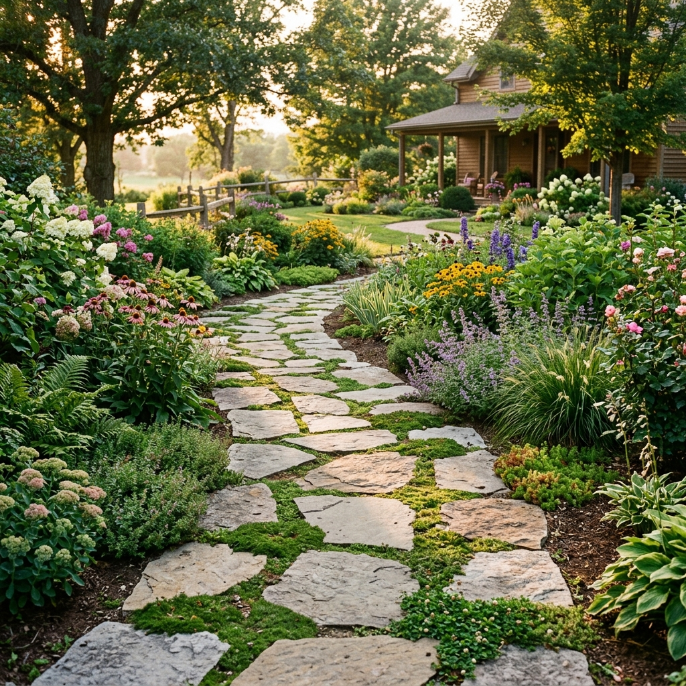
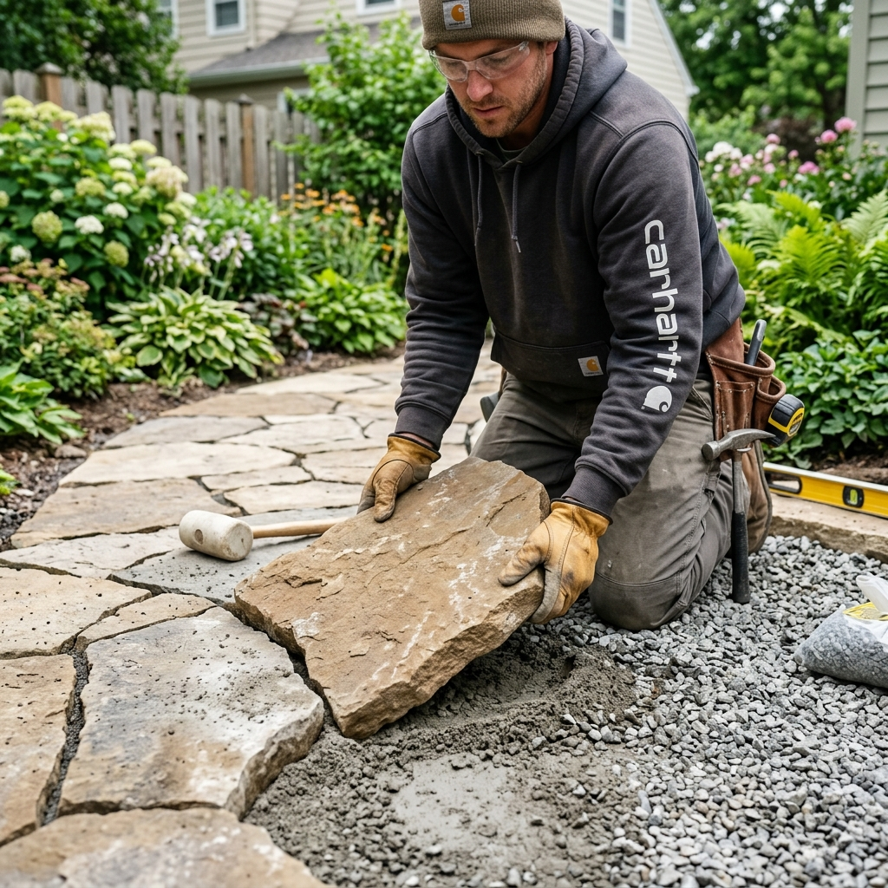
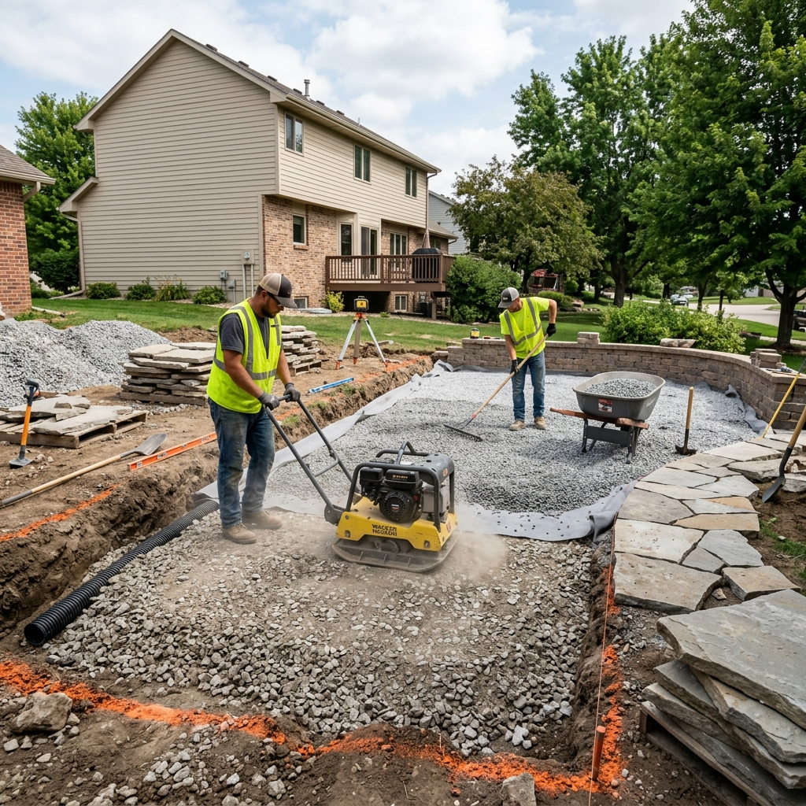
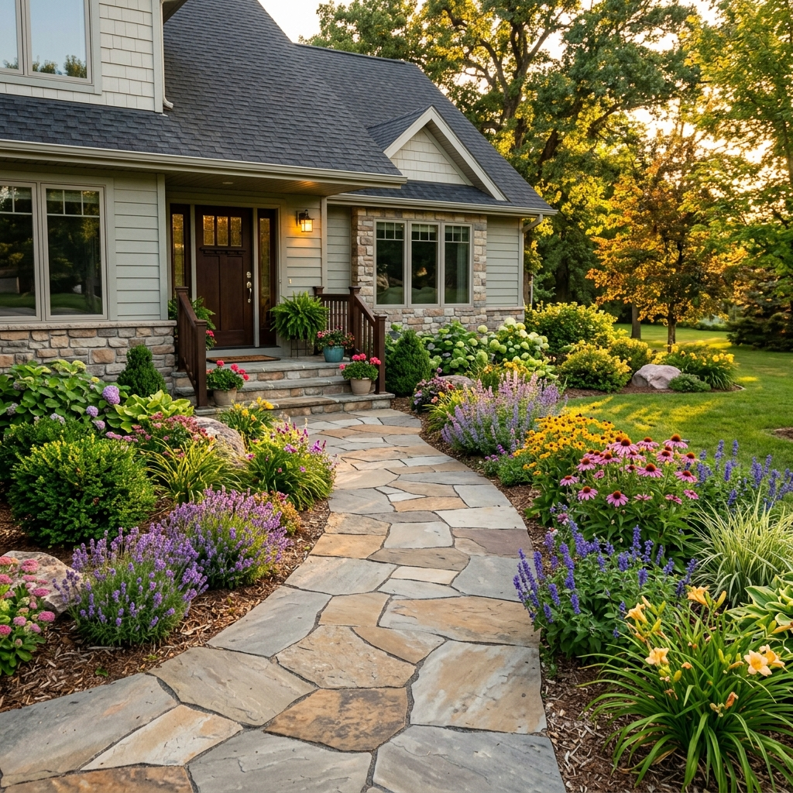

Hardscaping — Pavers
Flagstone Walkway Installation
Timeless, natural stone paths built with proper drainage and a stable base — designed to complement your Iowa landscape for decades.
Natural flagstone walkways for Iowa homes
A flagstone walkway brings nature's artistry right to your doorstep. Each flat, irregularly shaped stone is unique — together they create a mosaic path that adds timeless charm and rustic elegance to any outdoor space.
We've been installing flagstone walkways across Iowa for years, combining careful stone selection, proper excavation, and professional base preparation to deliver paths that stay stable through Iowa's freeze-thaw seasons.
What is a flagstone walkway?
A flagstone walkway is a path built from naturally occurring flat stones — typically slate, sandstone, limestone, or bluestone — set into the ground to create a durable walking surface. Each stone's irregular shape gives every installation a one-of-a-kind mosaic appearance that manufactured pavers simply can't replicate.
Beyond their beauty, flagstone paths are highly practical. They guide foot traffic across your yard, connect your home's entrance to garden areas, and add structure to an otherwise open landscape — all while blending naturally with the surrounding environment.

Our flagstone installation process
Every flagstone walkway we install starts with proper excavation — we remove the existing soil to the correct depth based on the stone thickness and your local frost line. Skipping this step is the number-one cause of shifting and sunken stones.
Next, we lay a compacted crushed-stone base to promote drainage and prevent settling. We then carefully fit each flagstone by hand, shaping pieces where needed to create tight joints and a visually pleasing pattern. The finished path is stable, level, and built to handle Iowa's seasons year after year.

Why proper base preparation matters
In Iowa, ground movement from freeze-thaw cycles is one of the biggest threats to any hardscape. Without a properly compacted gravel base, water trapped beneath the stones will expand as it freezes, pushing stones out of place and creating uneven, hazardous surfaces.
We install a minimum 4-inch compacted crushed-stone base on every project. This base layer drains water away quickly and provides a stable foundation that resists shifting season after season. It's an extra step that separates a walkway that lasts from one that needs constant repairs.

The finished result — beauty that lasts
A professionally installed flagstone walkway dramatically improves your home's curb appeal and outdoor livability. Whether it's a winding garden path, a straight front-entry walkway, or a connector between your patio and garage, flagstone adds a premium, natural look that complements any home style.
With proper installation and minimal maintenance — occasional re-sanding of joints and removal of moss or weeds — your flagstone walkway will remain beautiful and functional for 20 years or more. It's one of the most rewarding investments you can make in your outdoor space.

Common flagstone walkway problems — and how we fix them
-
1. Sunken or Heaving Stones
Problem: Individual stones sink, tilt, or heave upward over time, creating a tripping hazard and uneven surface.
Solution: Lift affected stones, re-compact the base material, add fresh compacted gravel, and relay the stone at the correct level. Address drainage issues to prevent recurrence.
-
2. Weed and Moss Growth
Problem: Weeds or moss take root in the joints between stones, making the path slippery and unsightly.
Solution: Fill joints with polymeric sand after installation to inhibit growth. Existing growth can be removed and joints re-packed. A pre-emergent herbicide application helps keep joints clean each season.
-
3. Cracked Flagstones
Problem: Thin or lower-quality stones crack under heavy foot traffic, vehicle weight, or severe freeze-thaw pressure.
Solution: Replace cracked stones with matching material. We recommend selecting stones at least 1.5–2 inches thick to withstand normal loads and Iowa winters without fracturing.
-
4. Poor Drainage / Pooling Water
Problem: Water pools on or around the walkway surface, accelerating freeze damage and creating slippery conditions.
Solution: Ensure the path has adequate slope (minimum 1–2%) away from structures. Add a channel drain or re-grade surrounding soil during repair to direct water away from the stone surface.
-
5. Gaps and Shifting at Edges
Problem: Edge stones gradually migrate outward, leaving gaps in the walkway and an irregular border.
Solution: Install edging restraints along both sides of the path during construction to keep border stones firmly in place. Existing paths can have edging added and border stones re-seated with fresh bedding material.